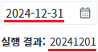

'WebSquare.date.toLunar' 메소드를 사용하여 날짜(yyyyMMdd) 형식의 문자열을 음력 날짜로 변환하는 예제입니다.
양력 날짜로 변환하는 경우 메소드 'WebSquare.date.toSolar'로 구현할 수 있습니다.
날짜(yyyyMMdd) 형식의 문자열을 음력 날짜로 변환하기
1
STEP 1: 초기 상태를 확인합니다.
InputCalendar에 초기 값으로 '20241231'이 할당되었고, 이 날짜를 음력 날짜로 변환한 결과 값인 '20241201'이 출력되어 있습니다.
Image 1.브라우저(Chrome) 실행 예시

2
STEP 2: InputCalenar의 값을 변경하여 음력으로 변환합니다.
InputCalendar의 값을 '20250101'로 입력하고 '음력으로 반환받기' 버튼을 클릭합니다.3
STEP 3: 실행된 결과를 확인합니다.
실행 결과에 '20241202'이 출력됩니다.
'WebSquare.date.toLunar' 메소드를 사용하여 스크립트를 작성합니다. 세부 스크립트는 아래의 예시에 작성되어 있습니다.
Example 1.Script
// 예제 파일에서는 스크립트 'scwin.ica_exam_1_toLunar'에 작성되어 있습니다. // 문자열 '20241231'를 음력 날짜로 반환받습니다. var result = WebSquare.date.toLunar('20241231'); // 반환 예시) 20241201
WebSquare.date.toLunar
WebSquare.date.toSolar